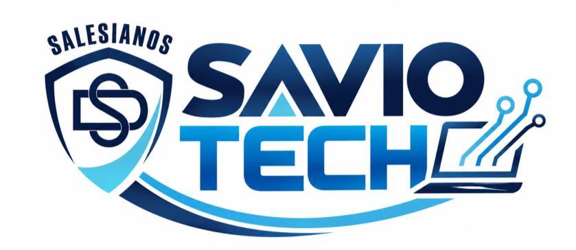

Cuidamos el laboratorio.
Seguimos aprendiendo.
Cada equipo tiene una historia. Registra una falla, sigue su atención y construye un laboratorio mejor organizado.
Cada equipo tiene una historia. Registra una falla, sigue su atención y construye un laboratorio mejor organizado.

La plataforma organiza reportes de usuarios.
La revisión del equipo corresponde al responsable técnico.